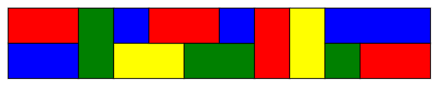
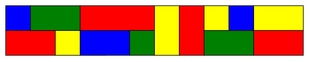

A certain type of tile comes in three different sizes - $1 \times 1$, $1 \times 2$, and $1 \times 3$ - and in four different colours: blue, green, red and yellow. There is an unlimited number of tiles available in each combination of size and colour.
These are used to tile a $2\times n$ rectangle, where $n$ is a positive integer, subject to the following conditions:
For example, the following is an acceptable tiling of a $2\times 12$ rectangle:

but the following is not an acceptable tiling, because it violates the "no four corners meeting at a point" rule:

Let $F(n)$ be the number of ways the $2\times n$ rectangle can be tiled subject to these rules. Where reflecting horizontally or vertically would give a different tiling, these tilings are to be counted separately.
For example, $F(2) = 120$, $F(5) = 45876$, and $F(100)\equiv 53275818 \pmod{1\,000\,004\,321}$.
Find $F(10^{16}) \bmod 1\,000\,004\,321$.